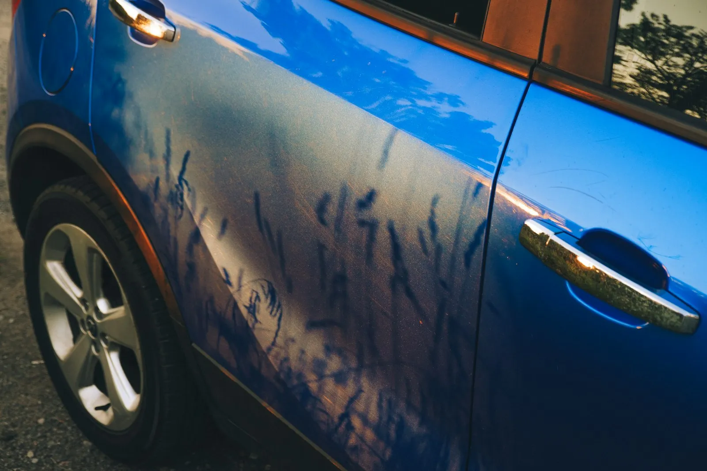
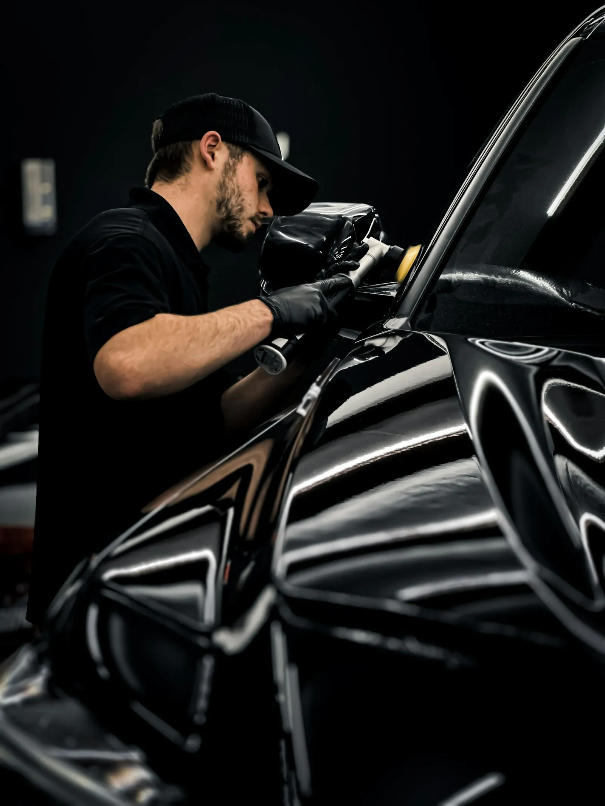
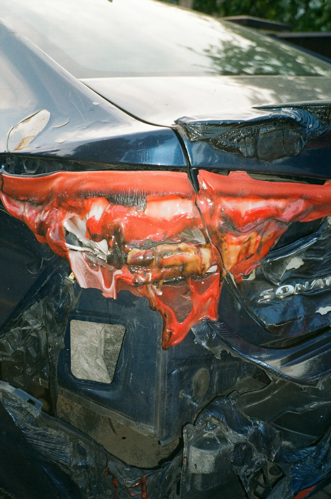
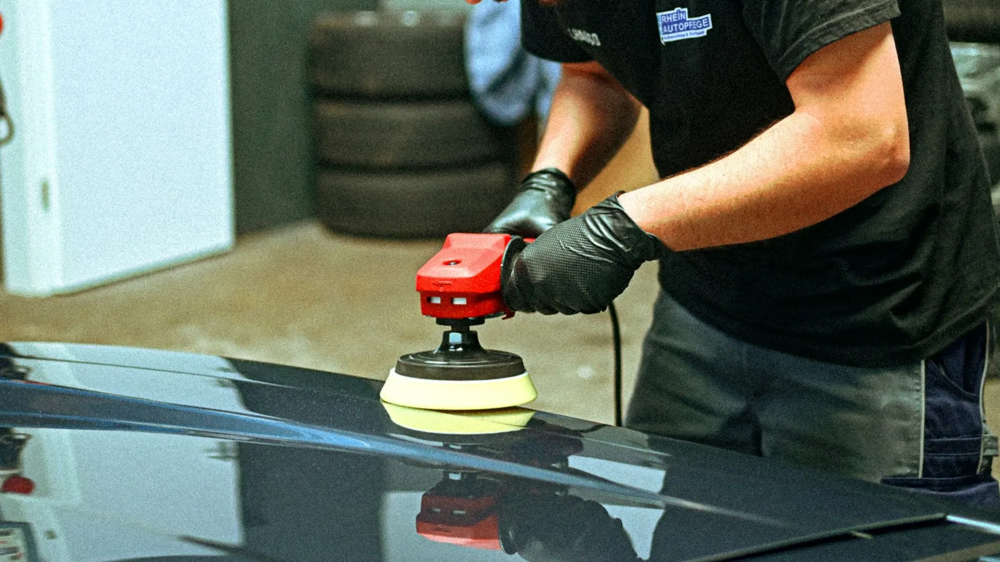
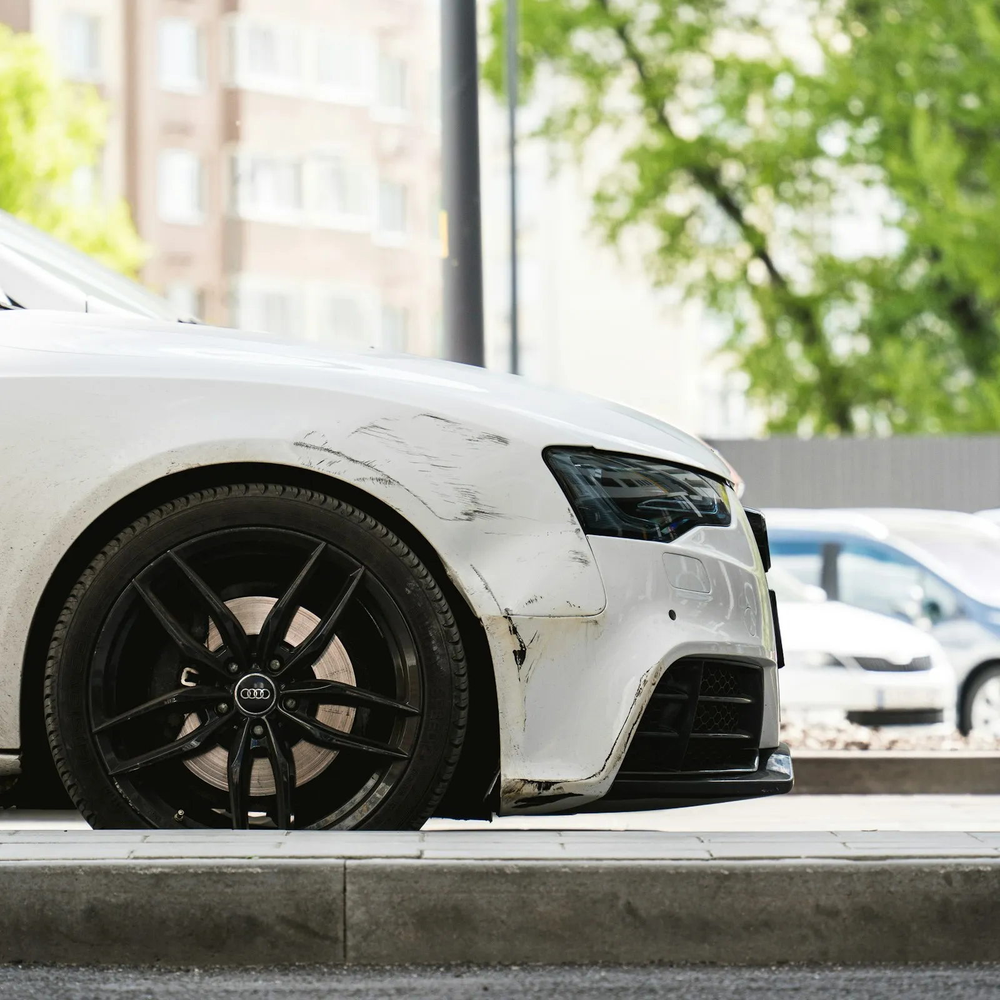
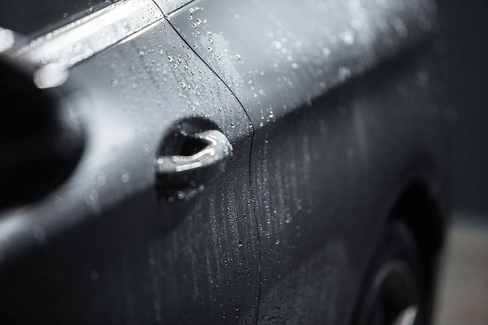
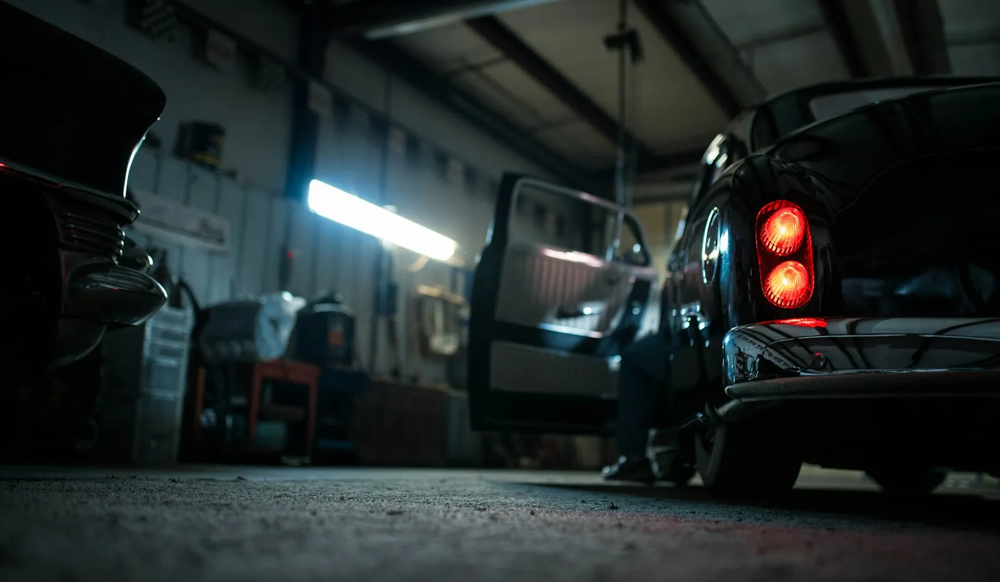

Deuken en krassen
Een kras langs de deur, een deuk van een winkelkar of een tik bij het parkeren.
UitdeukenKrassenSteenslag

MTN Carrosserie herstelt deuken, krassen en schade na een aanrijding. Stuur gerust eerst een paar foto's, dan weet je snel waar je aan toe bent.
Klein of groot, het principe is hetzelfde: eerst goed kijken, dan zeggen wat nodig is, en dat netjes uitvoeren.

Een kras langs de deur, een deuk van een winkelkar of een tik bij het parkeren.

Bumpers, spatborden, deuren of motorkap: herstellen of vervangen en terug in de juiste kleur.

Gespoten in lagen en gepolijst, zodat de overgang niet te zien is.
Met de juiste foto's kan de schade al een eerste keer bekeken worden. Tik aan welke je gemaakt hebt. Stuur ze daarna samen via WhatsApp.
0van 4 foto's klaar
Open WhatsApp




Over de middag gesloten van 12u tot 13u.
| Maandag | 8u30 tot 19u |
| Dinsdag | 8u30 tot 19u |
| Woensdag | 8u30 tot 19u |
| Donderdag | 8u30 tot 18u30 |
| Vrijdag | 8u30 tot 18u |
| Zaterdag | 9u tot 12u |
| Zondag | gesloten |
Meulebeeksesteenweg 61 in Tielt. Laat even weten wanneer je komt, dan is er zeker tijd.
Voor een eerste idee wel. Voor een definitieve prijs wordt je wagen nog even bekeken, want soms zit er meer achter dan je op een foto ziet.
Ja, op zaterdag van 9 tot 12 uur. Ook handig om je wagen op te halen.
Breng het aanrijdingsformulier en de gegevens van je verzekering mee. Dan bekijken we samen hoe je het best te werk gaat.
Dat hangt af van het werk. Je hoort vooraf ongeveer hoeveel dagen, en je krijgt een seintje als hij klaar is.
Ik maakte deze demo voor jullie om te tonen wat er kan. Na een kort gesprek maak ik er iets veel persoonlijkers van, helemaal naar jullie wens.
Vrijblijvend. Ik kom langs of we bellen.
Op maat, op jullie eigen domein.
Geen voorschot. Jullie betalen pas als alles klaar is.
Hosting, domeinnaam en kleine wijzigingen, zoals nieuwe openingsuren.
Omdat een voorbeeld meer zegt dan een mail. Zo zien jullie meteen wat er kan, en het kost jullie niets.
Nee. Het gesprek is vrijblijvend. Vinden jullie het niks, dan is het daarmee gedaan.
Na ons gesprek staat jullie site binnen 10 tot 14 dagen online.
Zeker. Jullie domeinnaam kan gewoon blijven, de nieuwe site komt in de plaats van de oude.
Nee, dat doe ik op basis van ons gesprek. Eigen foto's zijn mooi meegenomen, maar niet nodig om te starten.